SHIHO
Interview CATAL DESIGN
2022.04.28

結婚、出産を経て、なお美しく、ヘルシーで自然体なライフスタイルでも注目されるスーパーモデルSHIHOさん。そのハッピーでポジティブな佇まいの秘密は、プライベートの過ごし方にあるのでは？ 今回はSHIHOさんのお家時間について伺いながら、偏愛の私物をご紹介いただきました。リフレッシュを大切にするSHIHOさんが、どのようにLG Stylerを使っているかもあわせて教えていただきます。
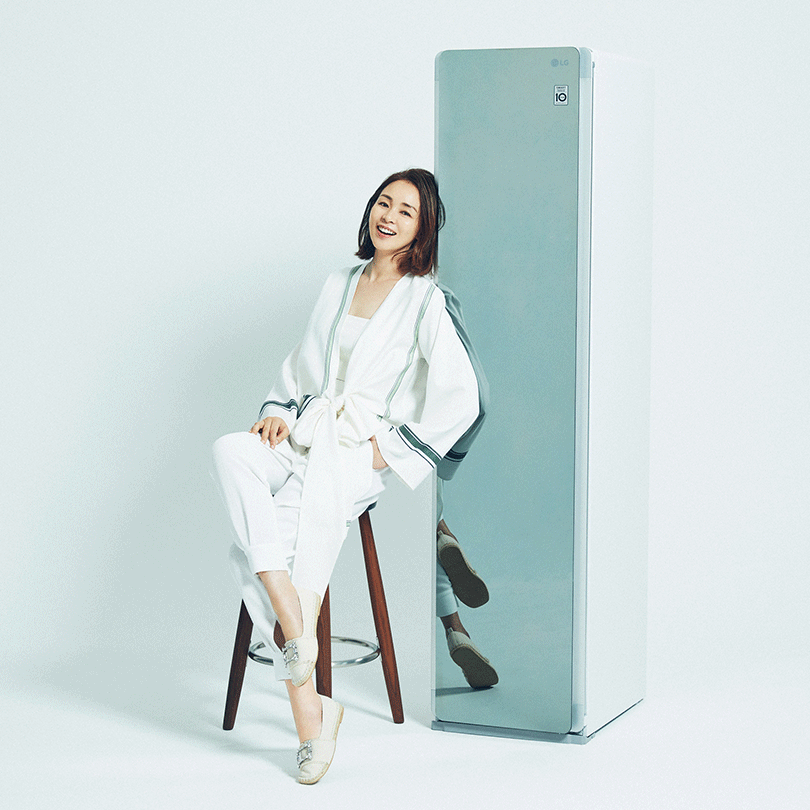
今、これまで以上にリフレッシュの時間が大切です。ハワイから東京に戻り、生活リズムは変わりました。この街で過ごすと気付けば“オン”になってしまうから、意識的に“オフ”を作るように心がけてみて、やっとリズムが掴めてきたところ。朝の散歩と瞑想に1時間とれると調子がいいし、週末は自然のなかに遠出をしたり、もちろん日々のメンテナンスやリラックスする時間も重要。LG Stylerでの洋服ケアでは、アロマを入れて使うのが好み。決して香りすぎず、優しく香るのが嬉しいんです。帰宅したらすぐにお気に入りの洋服をかけ、またフレッシュになった一枚を気持ちよく着ています。
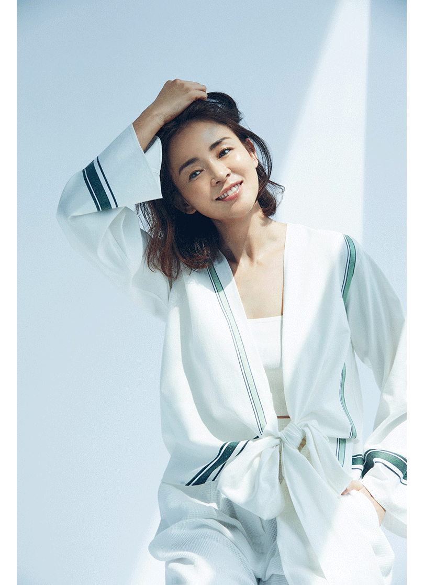
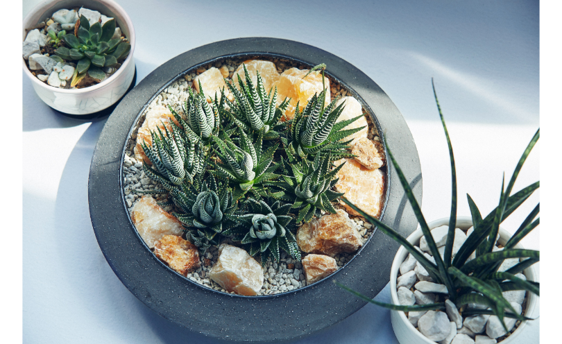
いきいきしたグリーンのおかげで、家の中が全く変わります。朝陽を受け、お水をあげて、おはようと話しかけてみたり(笑)。 置いているだけで部屋が息づくし、もちろん可愛い。この子はサボテン系なので数日に一度、お水を上げるんですが、乾いた土にじわじわと水が染み込む音がして、お水を飲んでいるのを感じます。自分のライフスタイルにもあった気楽に付き合える子で、相性がバッチリ。人間・植物・動物・鉱物…それぞれの世界に違うエネルギーがあるから、いつも大切に受け取ってチャージしています。
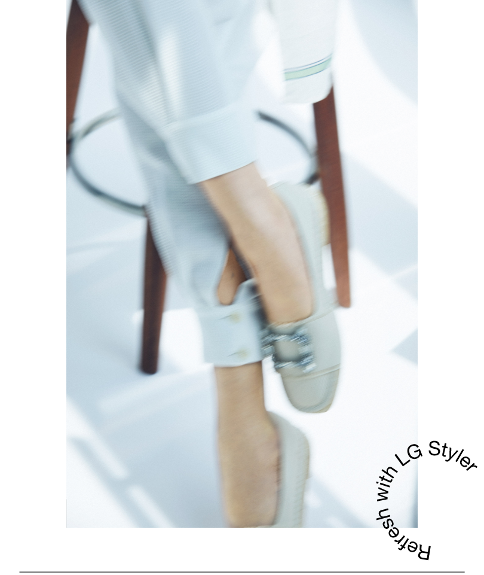
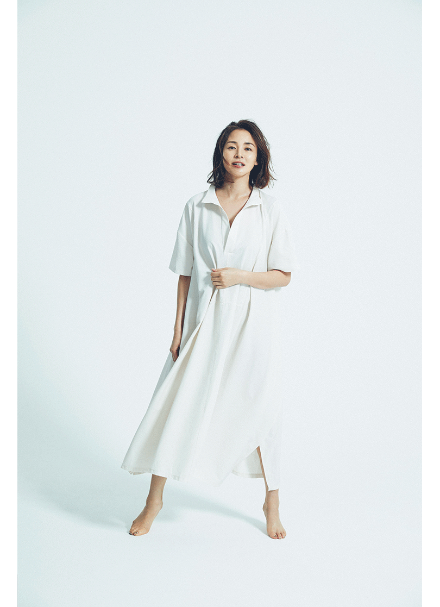
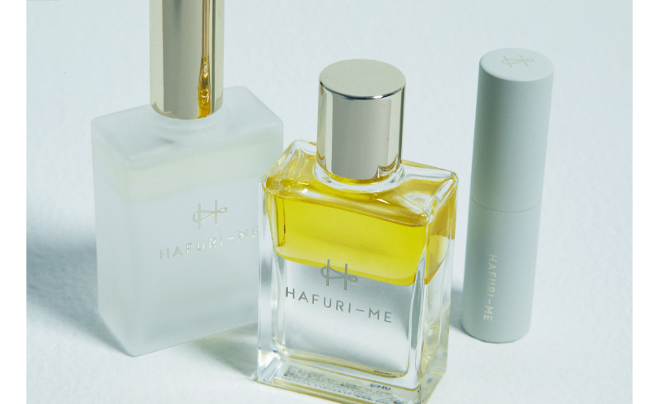
私は家中の至るところに愛するものを置きます。好きなモノを散りばめると、どの空間も、どの時間も、気持ちがいい。HAFURI-MEは、多彩で、尊敬する友人の柴咲コウちゃんが美に対する想いを込めて一から創り上げた、自然への感謝と祈りが込められたスキンケアです。「願えば叶う」という言葉があるように、"祈り"を大切に考えていますし、モイスト メディテーション ミスト(左)という名付けにも共感しています。今、スキンケアは多様にありますが、想いや生産背景など"誰が作ったどんなものか"というストーリーを含めて、ものを選択するようになりました。
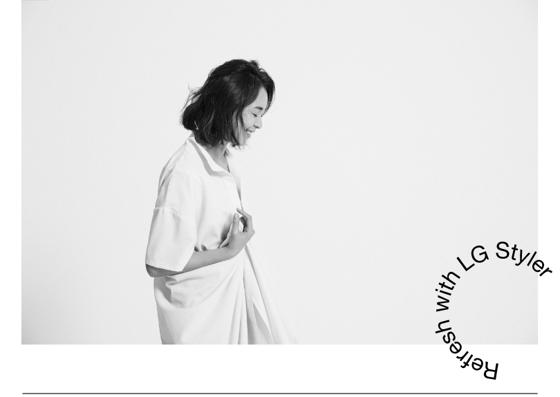
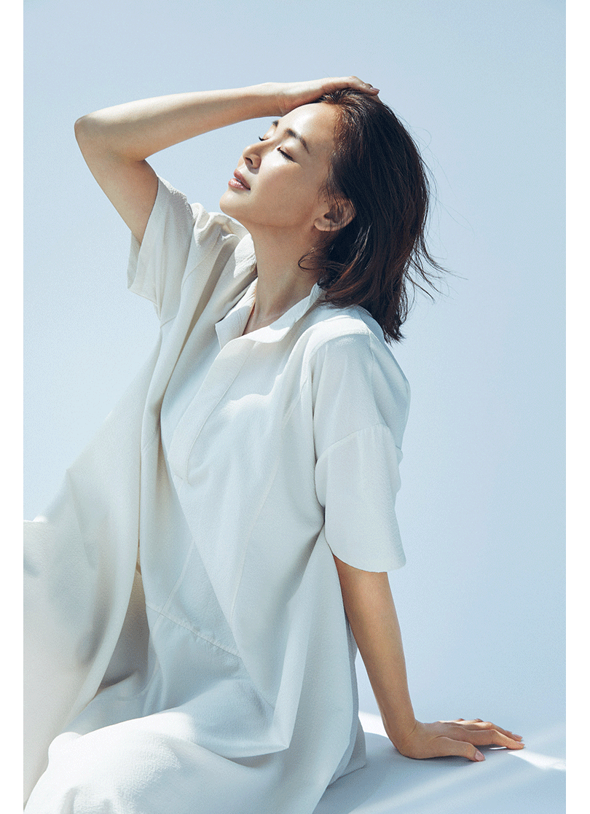
大好きな女性であるジョージア・オキーフの画集は、お守りのようなもの。自分の世界を繊細に力強く表現する自立した女性で、作品はもちろん生き様にも憧れます。めくって眺める以上に、彼女の精神がそばにあるような存在感に心強さを感じます。バイブルは最近、東京に帰ってきてから読むようになり、これは友人がプレゼントしてくれた一冊。私自身は無宗教ですが、読みやすく言葉ひとつひとつがとても深い。人間は完璧ではないし悩んだりもしますが、救ってくれたり導いてくれる大切な言葉が詰まっています。一節ずつ読んだり、ふとパラパラめくることも。リビングでも寝室でも気軽に手に取れる身近な読みものになりました。
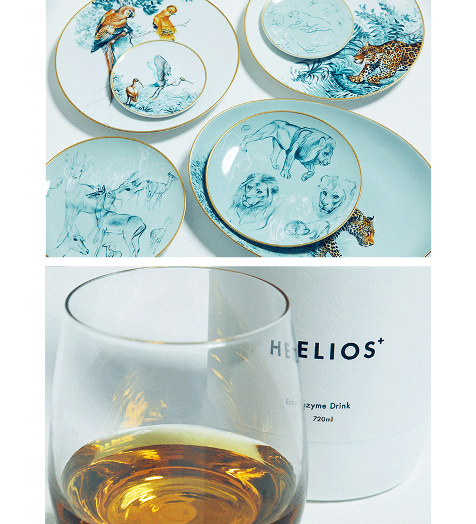
食器は毎日使うものですから、洗練されたデザインなら、もちろん気分は上がりますよね。20代の時にパリのエルメス本店で見たテーブルウェアたちがとても素敵に映って少しずつ集めていたところ、こちらのセットを誕生日プレゼントでいただきました。エルメスの食器は友達みんなからのお祝いでいただいたことも。歳を重ねながら、家の中はますます好きなものばかりになっていきます。
HELIOS+の酵素も同じく日常にあるもの。大高酵素とのコラボで、ボトルデザインがスマートな酵素って珍しいんです。友達にファスティングに誘ってもらって飲んで以来、体の変化に驚いて日々のドリンクにしています。疲れた時には甘いものが欲しくなるので、水で割ってジュースの代わりにしてもいいですね。
HELIOS+の酵素も同じく日常にあるもの。大高酵素とのコラボで、ボトルデザインがスマートな酵素って珍しいんです。友達にファスティングに誘ってもらって飲んで以来、体の変化に驚いて日々のドリンクにしています。疲れた時には甘いものが欲しくなるので、水で割ってジュースの代わりにしてもいいですね。
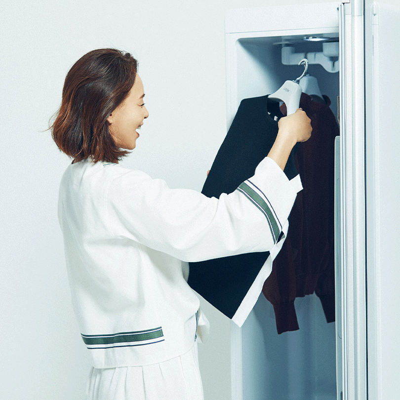
毎日使っています。ディナーに行って2時間着ただけの服を、その都度クリーニングに出したりはしませんよね。上質なニットやパンツをかけておくと、魔法のようにリフレッシュしてくれます。くたっとなりがちなニットやジャケットがふんわり、シワになりがちな麻やシルクのパンツはパリッと仕上がる。パンツのセンタープレスができる専用ハンガーも活用中。新しい気持ちで、服が着られて、気になる除菌もしてくれるのが優秀です。
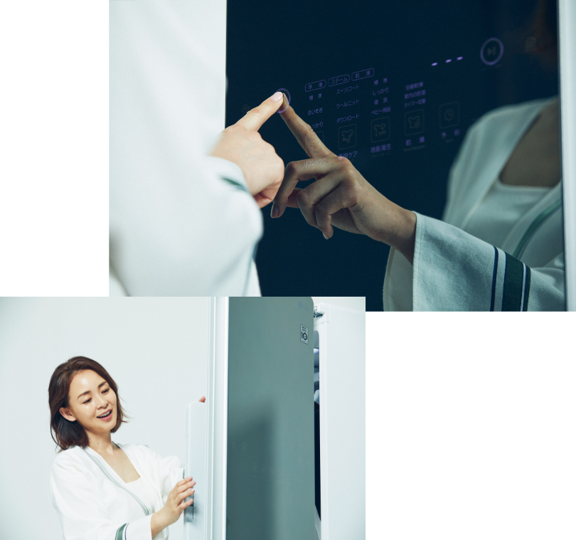
枕のケアが簡単にできるのもポイント。洗って、日干しして…と毎日はできませんが、頭って汗をかくので本当は除菌が気になります。LG Stylerに家族の枕を入れておいて、気持ちよく就寝できるのは嬉しいですね。
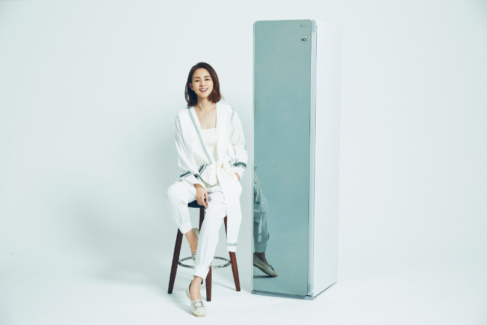
オンとオフの時間を分けて過ごすことは、私にとってとても大切。自分の時間、子供の時間、家族の時間、お友達と過ごす時間、お仕事の時間と、前もってバランスをとることで、その時々に集中できて、充実感が生まれます。
[ワンピーススタイル]
中に着ているボディスーツ¥9,350(ナイスナイスモーメント)／NICENICE MOMENT ルミネ新宿店 ワンピース／スタイリスト私物
[パンツスタイル]
シャツ¥33,000・パンツ¥23,100(ともにBACCA)／TOMORROWLAND その他／スタイリスト私物
問い合わせ先】
NICENICE MOMENT ルミネ新宿店：03-6302-0705
TOMORROWLAND：0120-983-511
中に着ているボディスーツ¥9,350(ナイスナイスモーメント)／NICENICE MOMENT ルミネ新宿店 ワンピース／スタイリスト私物
[パンツスタイル]
シャツ¥33,000・パンツ¥23,100(ともにBACCA)／TOMORROWLAND その他／スタイリスト私物
問い合わせ先】
NICENICE MOMENT ルミネ新宿店：03-6302-0705
TOMORROWLAND：0120-983-511
SHIHO
1994年のデビュー以来、女性の圧倒的な人気を得てトップモデルになる。ファッション雑誌・テレビ・ラジオ・広告・出版・プロデュース業など幅広く活躍し、同世代の多くの女性から支持を受けている。 他のモデルにはない自身の自然体・透明感・ヘルシーさを強みにヨガ・美容・瞑想本なども出版。 最近は、美と健康、禅や瞑想などウェルネスビーイングなイベントなど活躍の場を広げている。
Interview CATAL DESIGN